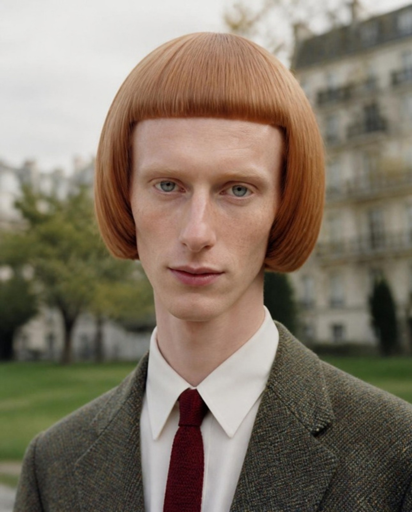
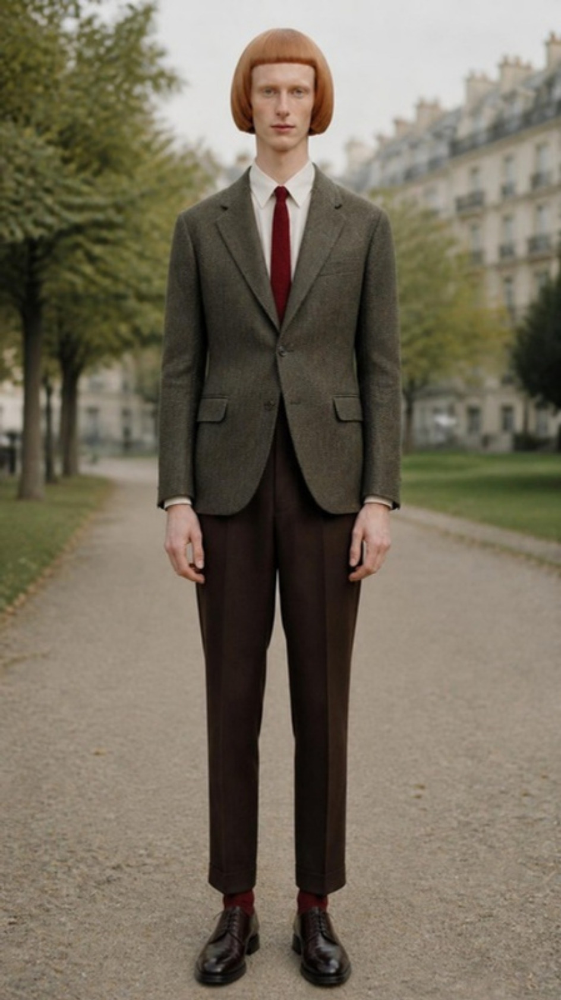

27 anos · afinador de pianos · Blumenau, SC


Anselmo é um homem real, bem vestido e impecavelmente cuidado, cuja estranheza não decorre de nenhum adereço, mas da soma de pequenas desproporções. O cabelo tem geometria perfeita demais, as sobrancelhas praticamente não existem, o pescoço é longo além do esperado e o olhar sustenta a câmera um segundo a mais do que o confortável.
O efeito pretendido é o do vale da estranheza dentro da normalidade: nada nele é fantasioso, e justamente por isso o observador demora a entender o que o incomoda. A elegância vem do guarda-roupa de alfaiataria clássica; o desconforto vem do corpo e do rosto.
| Nome | Anselmo Kreutz |
|---|---|
| Idade aparente | 27 anos (faixa aceitável: 25 a 30) |
| Origem | Teuto-brasileiro, nascido em Blumenau (SC) |
| Altura e biotipo | 1,96 m, ectomorfo, magro sem ser frágil |
| Ocupação | Afinador e restaurador de pianos antigos |
| Formato | Oval longo e estreito; testa muito alta, exposta pela franja curta |
|---|---|
| Pele | Muito clara, sardas discretas no nariz e nas maçãs do rosto; rosado natural nas orelhas e na ponta do nariz |
| Olhos | Cinza-azulados claros, afastados entre si, pálpebras levemente pesadas |
| Sobrancelhas | Descoloridas, quase invisíveis. É o traço que mais causa estranhamento e não pode ser omitido |
| Nariz | Longo, reto e fino |
| Boca | Pequena, lábios finos, quase sempre fechada |
| Queixo | Estreito e pontudo |
| Barba | Sempre barbeado |
| Cor | Ruivo acobreado natural (#B0704A), uniforme da raiz às pontas, brilho acetinado |
|---|---|
| Corte | Capacete geométrico arredondado, volume alto na coroa em forma de cúpula |
| Laterais | Caem retas, cobrem totalmente as orelhas e terminam em linha horizontal na altura da mandíbula |
| Franja | Microfranja reta e espessa, cortada em linha perfeitamente horizontal cerca de 3 cm acima da linha das sobrancelhas, com cantos em ângulo reto |
| Textura | Lisa, densa, com fios visíveis em linhas paralelas que irradiam da coroa; sem fios soltos, parece recém-escovada em qualquer situação |
| Pescoço | Extremamente longo e fino, visível acima do colarinho |
|---|---|
| Ombros | Estreitos e caídos, mais estreitos que o volume do cabelo |
| Braços e mãos | Braços longos; mãos longas, dedos finos de pianista |
| Pernas | Longas; calça de cintura alta acentua a proporção |
| Postura | Ereta, imóvel, braços junto ao corpo; cabeça levemente inclinada para baixo |
| Paletó | Tweed Donegal verde-musgo com pontos coloridos, abotoamento simples, dois botões |
|---|---|
| Camisa | Creme, colarinho de pontas longas |
| Gravata | Tricô de seda bordô, estreita, ponta reta |
| Calça | Lã chocolate, cintura alta, vinco marcado, barra levemente curta |
| Meias e sapatos | Meias finas bordô; derby de couro marrom escuro engraxado |
| Acessórios | Nenhum. Sem óculos, joias, chapéu, relógio aparente ou bolsa |
Rosto relaxado, boca fechada, olhar fixo na lente, cabeça inclinada alguns graus para baixo. Não pisca.
Sorriso mínimo de lábios fechados que não alcança os olhos. É a expressão mais inquietante do repertório.
Cabeça inclinada lateralmente, olhos um pouco mais abertos, boca imóvel, como quem escuta um som que ninguém mais ouviu.
Pálpebras baixam, queixo recua levemente, lábios se comprimem. Nunca franze a testa de forma visível.
Anselmo nunca gargalha, nunca mostra os dentes e nunca demonstra pressa. A amplitude emocional é deliberadamente estreita.
| Lente | 85 mm para retrato; 50 mm para corpo inteiro |
|---|---|
| Altura da câmera | Na linha dos olhos (retrato) ou do peito (corpo inteiro) |
| Luz | Luz natural difusa de dia nublado, uniforme e suave no rosto, sem sombras duras |
| Profundidade de campo | Rasa, foco nos olhos, fundo desfocado |
| Cenários | Cenário canônico: parque urbano com gramado e prédios de pedra clara em estilo haussmanniano ao fundo. Alternativas: interiores de madeira, salas de música, corredores antigos |
| Tratamento | Paleta natural e contida, aparência de filme Kodak Portra 400, grão fino, textura real de pele e tecido |
| Enquadramento | Vertical (4:5 ou 9:16), personagem centralizado e frontal |
Anselmo é educado ao ponto da formalidade, fala devagar, em frases completas, e trata todos por "o senhor" ou "a senhora", inclusive crianças. Tem ouvido absoluto e uma sensibilidade quase física a ruídos fora do tom, o que explica o olhar atento demais e a imobilidade: ele está sempre escutando.
Coleciona diapasões antigos, mantém um caderno com a afinação de cada piano que já tocou e veste a mesma combinação de roupas por convicção, não por descuido. É gentil, previsível e inofensivo, mas as pessoas raramente se sentem à vontade a seu lado sem saber explicar o motivo.
Cabelo acobreado em capacete com microfranja alta; sobrancelhas quase invisíveis; olhos cinza-azulados afastados; pescoço muito longo; ombros estreitos; sempre barbeado; nenhum acessório; olhar direto e boca fechada.
Cenário, estação do ano, ângulo de cabeça e enquadramento. Peças de roupa podem variar dentro da paleta (ex.: tricô creme no lugar do paletó), mantendo o colarinho de pontas longas.
Use o texto abaixo, em inglês, como base fixa em qualquer gerador. Acrescente ao final apenas cenário, pose e enquadramento. Sempre que a ferramenta aceitar imagem de referência, anexe o retrato canônico (img/anselmo-retrato.jpg): é esse procedimento que mantém o rosto idêntico entre gerações, como ocorreu na foto de corpo inteiro desta ficha.
Photorealistic photograph of Anselmo Kreutz, an original fictional man, 27 years old, of German-Brazilian descent, 1.96 m tall and slender. FACE: long narrow oval face, unusually tall forehead, very pale fair skin with faint freckles across nose and cheekbones, natural pink tones on ears and nose tip, wide-set pale grey-blue eyes with slightly heavy lids, eyebrows bleached almost invisible, long straight thin nose, small closed mouth with thin lips, narrow pointed chin, clean-shaven. HAIR: natural copper ginger hair, uniform color, satin sheen, cut into a perfectly geometric round helmet shape, extremely voluminous and glossy, dome-shaped crown, sides fall straight and fully cover the ears ending in a blunt horizontal line at jaw level, thick blunt micro-fringe cut in a perfectly horizontal line high on the forehead with square corners, visible parallel strands radiating from the crown. BODY: extremely long thin neck, narrow sloping shoulders, long arms, long thin hands. CLOTHING: single-breasted moss-green Donegal tweed jacket, cream shirt with long-point collar, narrow burgundy knit tie with square end, high-waisted chocolate-brown wool trousers with sharp crease, burgundy socks, dark brown polished derby shoes. No glasses, no jewelry, no hat, no accessories. EXPRESSION: neutral, calm, unblinking direct stare into the camera, head slightly tilted down, faint polite closed-mouth smile that does not reach the eyes. PHOTOGRAPHY: 85mm lens, eye level, soft overcast diffused daylight, even light on the face, shallow depth of field, muted natural palette, Kodak Portra 400 film look, fine grain, real skin and fabric texture, sharp focus on the eyes. SCENE: [descrever cenário, pose e enquadramento]
cartoon, illustration, blonde hair, platinum hair, dark brown hair, 3d render, anime, plastic skin, airbrushed, beard, mustache, stubble, dark eyebrows, thick eyebrows, glasses, sunglasses, hat, earrings, necklace, watch, rings, bag, scarf, visible ears, curly hair, messy hair, long hair past shoulders, short neck, broad shoulders, muscular, open-mouth smile, teeth showing, harsh shadows, flash, neon, oversaturated, extra fingers, deformed hands, multiple people